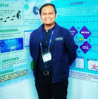

|  | Engr. Jasper Meynard P. Arana, MSECE
Faculty Member and Researcher |
I am Engr. Jasper Meynard P. Araña, faculty member of Electronics Engineering Department of Adamson University. I've been at the university for almost 6 years now, and I have been handling professional courses in Communications and Elective Courses. I also studied here at Adamson University for my undergraduate in the same department. After passing the board exam, I immediately applied to the University to teach. I finished my master’s degree at Chung-Ang University, Seoul, South Korea, majoring in Communication, and Signal Processing. As a researcher, I published various journal and conference papers about Mobile Communication, Vibration Analysis, and Wireless Sensor Network. Also, as SPARTA scholar, a DOST-AAP initiated project to put in place the necessary online education, research and development mechanisms and infrastructure to not only enable the industry of data science and analytics but also to advance smart governance practices, I am well verse in data analytics with Python, R, and Tableau. As a WIPO Certified in Patents and TBI Manager, I helped in patent searching and development of start-ups and spinoffs. Also, aside from teaching and research, I am also the Continuous Quality Improvement Officer of the College of Engineering for 6 years and have experience in various accreditation such as ISO, PAASCU, PACUCOA and PTC. As the CQI Officer, we designed the framework for the OBE implementation of the University and have been regularly monitoring the attainment of outcomes.
An Efficient Handover Measurement Technique for Millimeter-Wave Cellular Communications
JMP Arana, R Pec, YS Cho
IEICE Transactions on Communications 101 (2), 592-602
Asset Locator with Distance and Altitude Measurement Using GPS and BLE for Future IoT Applications
ML Costales, K Rose, J Meynard
2019 International Conference on Computational Intelligence and Knowledge …
Development of Leak Detection System for PVC Pipeline Through Vibro-Acoustic Emission
DC Ferino, RP Jose, JRM Ochoa, VV Villamiel, JMP Araña
TENCON 2018-2018 IEEE Region 10 Conference, 2557-2560
Random-access technique for self-organization of 5G millimeter-wave cellular communications
JM Arana, JP Han, YS Cho
Mobile Information Systems 2016
Random-access technique for self-organization of 5G millimeter-wave cellular communications
JM Arana, JP Han, YS Cho
Mobile Information Systems 2016
Random access preamble design for 5G millimeter-wave cellular systems with multiple beams
JMP Arana, KM Saquib, YS Cho
2017 Ninth International Conference on Ubiquitous and Future Networks
| Embedded Systems | ⭐⭐⭐⭐⭐ | Matlab | ⭐⭐⭐⭐⭐ |
| Data Science | ⭐⭐⭐ | Python | ⭐⭐⭐⭐⭐ |
| Date | Work |
|---|---|
| 2014-present | Professor at ECE Department, AdU |
| 2015-present | CQI Officer at College of Engineering, AdU |
| 2017-2019 | IP Officer at ITSO, AdU |